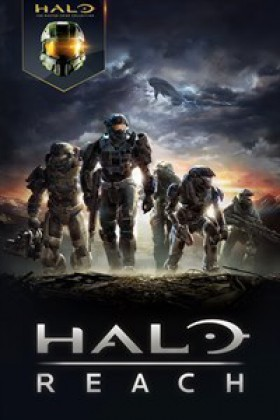
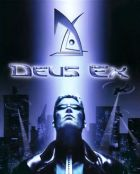
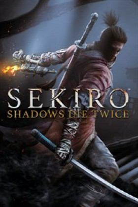

Los Mejores Juegos de Accion

Dark Souls III
Es la tercera entrega de la saga de acción y rol Dark Souls a cargo de From Software y Namco Bandai Games para PC, PlayStation 4 y Xbox One. Adéntrate en un universo lleno de enemigos y entornos descomunales, un mundo en ruinas en el que las llamas se están apagando. Los jugadores se sumergirán en la atmósfera épica de un mundo de oscuridad gracias a un juego más rápido y una intensidad de combate ampliada. Plataforma PS4 | XBO | PC | Género Acción, RPG Lanzamiento 12/04/2016 Desarrollador: From Software | Texto Español | Voces Inglés
Halo Reach
Experiencia de la trágica y heroica historia de Noble Team, un grupo de espartanos, que a través de un gran sacrificio y coraje, salvaron innumerables vidas frente a probabilidades imposibles. El planeta Reach es la última línea de defensa de la humanidad entre el Pacto invasor y su objetivo final, la destrucción de la Tierra. Si cae, la humanidad será empujada al borde de la destrucción. Lucha solo o con compañeros de escuadrón en Firefight para sobrevivir contra interminables oleadas de enemigos que se despliegan con dificultad cada vez mayor. Halo Reach para PC y Xbox One como parte de Halo: The Master Chief Collection es un título de acción FPS a cargo de 343 Industries y Microsoft.

Deus Ex
Meristation
Warren Spector sigue demostrando su maestría con uno de los mejores juegos de rol y acción del año.
Plataforma PC | Género Acción, First Person Shooter Lanzamiento 27/09/2000 Desarrollador: Ion Storm | Texto Español | Voces Inglés Editor: Eidos Interactive |+16

Sekiro: Shadows Die Twice
Sekiro: Shadows Die Twice, desarrollado por From Software y editado por Activision para PC, PlayStation 4, Xbox One y Stadia, es un RPG de acción de los creadores de Dark Souls y Bloodborne que recoge el testigo de la mítica saga Tenchu y nos lleva a la era Sengoku, en el año 1500 en Japón, en el que un samurái deberá enfrentarse a la muerte a cada paso.
Top 7 juegos de Accion para android
Espero y le guste mi continido, no olviden que esta pag apenas esta en matenimiento, la cual esto seria un beta no olvides dejarme tu sukulento like.